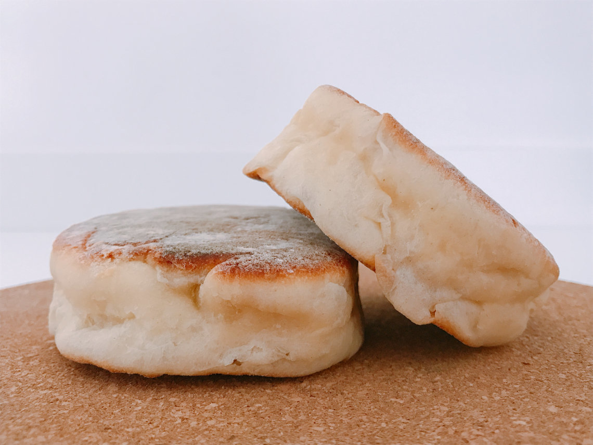
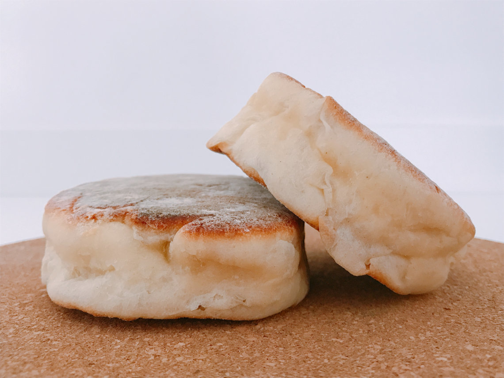

Lagoa das Sete Cidades
Uma das paisagens mais icônicas dos Açores, a Lagoa das Sete Cidades é uma dupla de lagos
com águas de diferentes tons de azul e verde, rodeada por montanhas. É o lugar perfeito para
caminhadas, passeios de caiaque ou simplesmente para admirar a vista espetacular.
Termas de Furnas
São Miguel é famosa pelas suas fontes termais, e as Termas de Furnas são um dos maiores
atrativos. Além de relaxar nas águas quentes, você pode ver o tradicional cozido das Furnas,
que é preparado de forma única, enterrado no solo vulcânico, para um sabor inigualável.
Miradouro da Boca do Inferno
Localizado no Parque Natural da Ribeira dos Caldeirões, este miradouro oferece uma das vistas
mais impressionantes da ilha, com um panorama de montanhas, vales e a Lagoa das Sete
Cidades. É um excelente ponto para tirar fotos e apreciar a natureza intocada da ilha.
Observação de Baleias e Golfinhos
São Miguel é um dos melhores lugares do mundo para observar baleias e golfinhos em seu
habitat natural. Vários operadores oferecem passeios de barco para avistar essas magníficas
criaturas, proporcionando uma experiência única e inesquecível para os amantes da vida selvagem.
 
